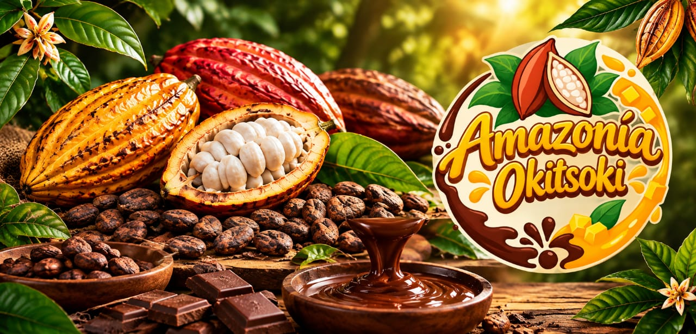

Amazonía Okitsoki S.A.C.
Chocolatería artesanal y confitería de autor. Elaboramos chocolates artesanales rellenos de mermelada de frutas nativas (como coco, cocona y maracuyá) y frutos secos de la región (como sacha inchi).
Amazonía Okitsoki S.A.C.
Amazonía Okitsoki
Chocolatería artesanal
Satipo, Junín
Chocolates artesanales rellenos de mermelada de frutas nativas y frutos secos de la región.

Descripción de la Empresa
Amazonía Okitsoki es un negocio artesanal dedicado a la elaboración de chocolates con cacao nativo de Satipo, rellenos con mermelada artesanal de frutas de la selva y decorados con frutos secos de la zona.
Ofrece barras y bombones de chocolate artesanal elaborados con cacao de Satipo, rellenos de mermeladas exóticas y cubiertos con frutos secos crujientes, presentados en empaques ecológicos y modernos.
Nuestro Proceso Artesanal
Conoce el viaje del verdadero cacao de Satipo desde la cosecha hasta convertirse en una experiencia de autor.
Selección Nativa
Granos seleccionados a mano por agricultores locales de la selva central.
Tostado de Autor
Técnicas tradicionales que potencian el aroma e intensidad pura del chocolate.
Frutos Exóticos
Relleno con mermeladas de cocona, maracuyá, coco y crujiente de sacha inchi.
Eco-Empaque
Presentación biodegradable alineada con nuestro compromiso ambiental.
Misión Institucional
Elaborar chocolates artesanales de alta calidad combinando el cacao de nuestra región con mermeladas de frutas nativas y frutos secos, ofreciendo un producto innovador, delicioso y representativo de la selva central.
Visión al 2028
Para el año 2028, ser reconocida en la provincia de Satipo y en la región Junín como la marca líder en chocolatería artesanal de innovación, destacando por el uso de cacao nativo y el valor cultural de la zona.
Objetivos Estratégicos
Pilares fundamentales para garantizar nuestro crecimiento y compromiso sostenible.
01
Valor Local
Integración directa de cacao nativo y frutas exóticas de productores regionales.
02
Sostenibilidad
Uso de empaques biodegradables ecoamigables y respeto por el medio ambiente.
03
Calidad de Autor
Brindar una experiencia sensorial única sobre el origen artesanal de cada chocolate.
04
Consolidación
Estandarizar la identidad visual y de marca en todos nuestros canales comerciales.
Valores Corporativos
Los valores que definen el alma y la ética de Amazonía Okitsoki.
Calidad
Ofrecer chocolates artesanales elaborados con el más selecto cacao nativo y frutos cultivados por agricultores de Satipo.
Responsabilidad
Cuidar rigurosamente los recursos naturales de la selva central, promoviendo prácticas ecoamigables en cada proceso.
Respeto
Fomentar un trato cordial, transparente y justo con nuestros clientes, colaboradores y comunidades productoras.
Compromiso
Garantizar la mejora constante de nuestros productos para superar siempre las expectativas de quienes nos eligen.
Identidad
Sentir un profundo orgullo por la riqueza cultural, la historia y las tradiciones de la provincia de Satipo.
Autenticidad
Mantener recetas genuinas y preparaciones artesanales que reflejan la verdadera esencia de la selva central.